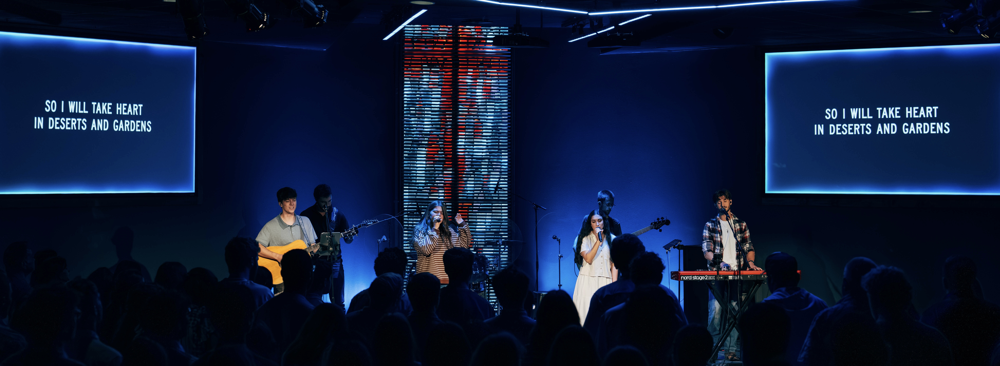
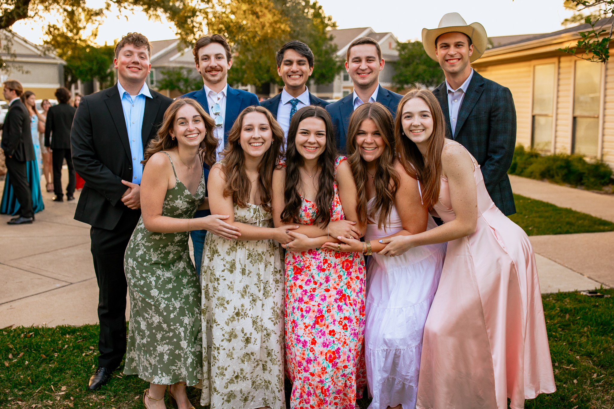
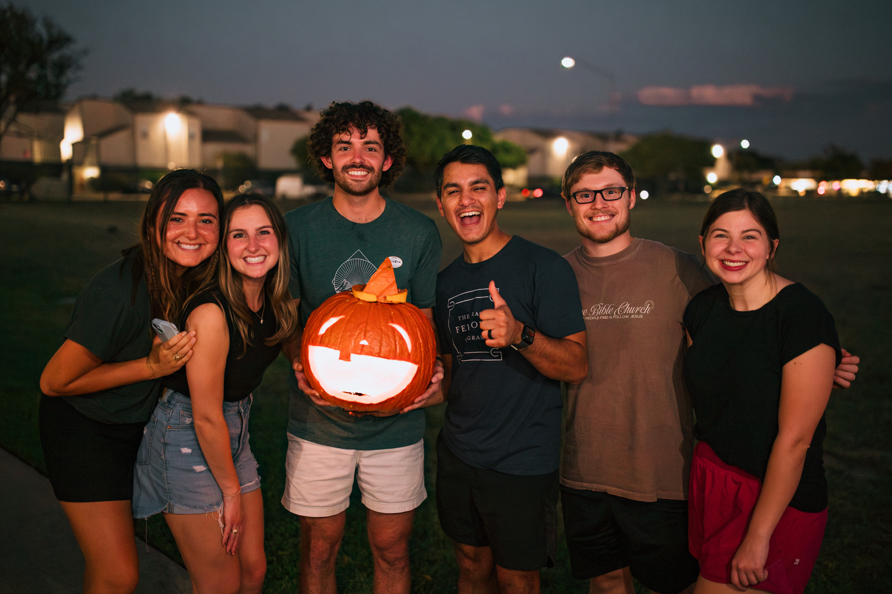
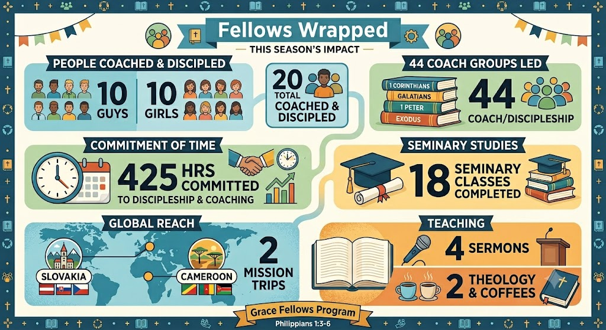

Ministry Update - March 2026
A ministry update from Logan Augustine. Much Love!
And just like that, two years have flown by! I’ve met so many wonderful people, learned so much from God, and given my all to the city of College Station. I hope this update can give you a 30,000 foot view of the amazing things God has given me this past semester and these past two years as a Fellow at Grace Bible Church!

There is so much to be said about the last two years. So many stories, so much laughter, so much growth, and such wonderful works of God in our town. I hope that as your read the following, you'll really stop to consider that you made so much of this possible! God used you, your generosity, your love and support, and blessed me with the journey of a lifetime.
"And we know that for those who love God all things work together for good, for those who are called according to his purpose." Romans 8:28
Discipleship and Coaching
I’ve had the wonderful privilege of leading and coaching 20 students over the past 2 years, helping them in their journeys to know God, understand the Bible, and help college students do the same. They have truly been amazing, and I’ve learned so much from my time with these awesome leaders!

The Chance to Learn and Grow
As a Fellow, I’ve had the chance to “try out” my gifts and skills in church ministry, meaning that I’ve had opportunities to grow in preaching, teaching, organizing, counseling, and professional growth. I’ve learned what gifts God has given me to bless others with and I’ve realized that I need other people’s gifts to succeed, too! We’re all a part of a team, made to work together.
On top of these practical ministry experiences, I’ve also dove headfirst into my first 2 years of seminary courses. I’ve absolutely loved these classes and they’ve helped me to grow in my understanding of God and His order over the world. I’ve studied topics like Church History, Systematic Theology, Leadership, and Preaching, and I have a lot more to learn!
Mostly, these past 2 years have given me a chance to focus on the development of my character. We are to grow in godliness for all our days, and so I believe we should spend significant amounts of energy growing to become more like Christ in thought, deed, and virtue. Overall, the Fellows Program taught me so much and I’ve had a once-in-a-lifetime growth experience throughout it all. I’ve loved it!

Friends for a Lifetime
As I exit the 2 year program, my greatest love and satisfaction has come from the depth of relationships that I’ve built at Grace Bible Church and Texas A&M. This also means that leaving College Station will be really sad for Emma and me. The students that I’ve had the chance to learn from, lead, and invest into have been the absolute best. All of the staff here at the church have become some of my closest friends and family. And the beautiful community in College Station of like-minded Christians who want nothing more than for Christ’s Kingdom to be glorified over the earth will always be a golden example of what the church can look like in this dark, corrupted world. College Station has taught me that there is hope when days seem hopeless, there is light when everything is dark, there is peace in a world riddled with anxiety, and this strength and beauty is only found through Jesus Christ and in his people.
As Emma and I move from College Station to Dallas, we’ll miss College Station very dearly. But we know God has good plans on the horizon!
Fellows Wrapped!

Next Steps… Finally, the question that so many have been asking: Where are you and Emma headed next?!
Emma and I have been so blessed to see God clearly opening and closing doors in our journey. In our next phase, God has given Emma an amazing Physical Therapy job in downtown Dallas! She’ll begin working after her licensure exam at the end of the summer, so pray with us as she studies diligently and as we look forward to moving!
I will continue as a full-time seminary student at Dallas Theological Seminary as I pursue my Masters of Theology. As I’ve said to everyone before, I love my classes so much, and I think I’ll love them even more in person! There’s so much to learn and explore at Dallas Theological, so pray that our transition will be smooth and that we’ll walk hand-in-hand with what the Lord has for us up north!
Finally, I cannot say thank you enough. If you’ve made it to the end of this update, please know that Emma and I could absolutely not have done this without your constant support over the last 2 years, your prayers, your texts of encouragement, and your love. You all made a huge impact on the college town I love so dearly, and I know that one day in eternity many Texas Aggies will find you in the Kingdom and say, “Without you, I wouldn’t be here today.” So THANK YOU for your generosity and love!
As for College Station, continue to pray. As for me and my family, continue to reach out. And as for your love, continue to grow towards Christ and obey his calling on your life. Know that you are deeply, continually, thoroughly loved by me and by the Father.
In Christ,
Logan Augustine, 6/1/26
An important logistic: I will officially finish the Fellows Program at the end of July, so I will continue to raise support until then! Many of you have been generously giving for two whole years, so it would wonderfully bless Emma and me if you would continue to give through the month of July.
After that, Reliant Mission should automatically suspend your giving to my account. I will follow this update with confirmation on that, or with instructions on how to manually discontinue if you so choose! Please expect another update email from me regarding giving in the near future!